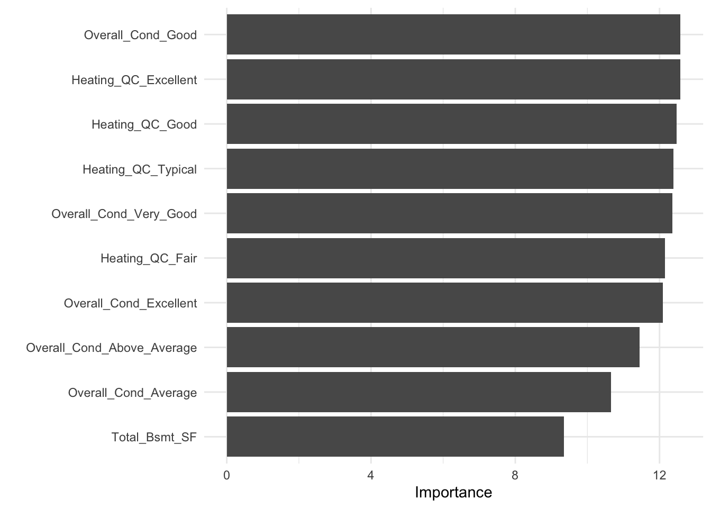

- From base R to tidymodels;
- Split our data into training and test sets;
- Preprocess the training data;
- Specify a linear regression model;
- Train our model on the training data;
- Transform the test data and obtain predictions using our trained model.
In this case study, you will predict houses selling price from characteristics of these houses, like size and layout of the living space in the house. What kind of model will you build?
To predict a continuous, numeric quantity like selling price, use regression models.
Load in the packages we’ll be using for modelling:
Build a simple linear model usign base R’s lm() function
#fit a linear model
ames_fit_all <- lm(Sale_Price ~ ., data = ames_data)
#Print the summary of the model
summary(ames_fit_all)
Call:
lm(formula = Sale_Price ~ ., data = ames_data)
Residuals:
Min 1Q Median 3Q Max
-0.46479 -0.02019 0.00009 0.02110 0.20903
Coefficients: (7 not defined because of singularities)
Estimate Std. Error
(Intercept) -1.466e+01 1.886e+01
MS_SubClassOne_Story_1945_and_Older -2.005e-02 6.094e-03
MS_SubClassOne_Story_with_Finished_Attic_All_Ages 8.964e-03 2.061e-02
MS_SubClassOne_and_Half_Story_Unfinished_All_Ages 1.334e-02 2.428e-02
MS_SubClassOne_and_Half_Story_Finished_All_Ages 1.675e-02 1.108e-02
MS_SubClassTwo_Story_1946_and_Newer -1.370e-02 9.587e-03
MS_SubClassTwo_Story_1945_and_Older 1.582e-02 1.056e-02
MS_SubClassTwo_and_Half_Story_All_Ages 2.779e-02 1.849e-02
MS_SubClassSplit_or_Multilevel -3.897e-02 1.856e-02
MS_SubClassSplit_Foyer -7.937e-03 1.300e-02
MS_SubClassDuplex_All_Styles_and_Ages -3.934e-02 9.781e-03
MS_SubClassOne_Story_PUD_1946_and_Newer -2.003e-02 1.788e-02
MS_SubClassOne_and_Half_Story_PUD_All_Ages -9.411e-02 5.262e-02
MS_SubClassTwo_Story_PUD_1946_and_Newer -5.566e-02 2.102e-02
MS_SubClassPUD_Multilevel_Split_Level_Foyer -5.074e-02 2.456e-02
MS_SubClassTwo_Family_conversion_All_Styles_and_Ages 1.767e-03 3.069e-02
MS_ZoningResidential_High_Density 1.845e-03 1.295e-02
MS_ZoningResidential_Low_Density -1.603e-03 8.678e-03
MS_ZoningResidential_Medium_Density -2.337e-02 9.928e-03
MS_ZoningA_agr -7.772e-02 7.569e-02
MS_ZoningC_all -8.881e-02 1.546e-02
MS_ZoningI_all -3.015e-02 4.587e-02
Lot_Frontage 2.292e-05 3.076e-05
Lot_Area 1.212e-06 1.641e-07
StreetPave 5.014e-02 1.545e-02
AlleyNo_Alley_Access -1.065e-02 5.227e-03
AlleyPaved -3.210e-03 8.044e-03
Lot_ShapeSlightly_Irregular -1.320e-03 2.202e-03
Lot_ShapeModerately_Irregular 3.917e-03 5.809e-03
Lot_ShapeIrregular -3.377e-03 1.228e-02
Land_ContourHLS 5.369e-03 6.735e-03
Land_ContourLow -4.965e-03 8.755e-03
Land_ContourLvl 4.931e-03 4.946e-03
UtilitiesNoSeWa -7.590e-02 4.989e-02
UtilitiesNoSewr 3.107e-02 4.130e-02
Lot_ConfigCulDSac 3.035e-03 4.384e-03
Lot_ConfigFR2 -1.144e-02 5.629e-03
Lot_ConfigFR3 -9.001e-03 1.277e-02
Lot_ConfigInside -3.333e-03 2.356e-03
Land_SlopeMod 3.844e-03 5.368e-03
Land_SlopeSev -4.202e-02 1.637e-02
NeighborhoodCollege_Creek -1.241e-02 1.586e-02
NeighborhoodOld_Town -6.725e-03 7.369e-03
NeighborhoodEdwards -2.308e-02 1.254e-02
NeighborhoodSomerset 2.252e-02 9.759e-03
NeighborhoodNorthridge_Heights 2.103e-02 9.482e-03
NeighborhoodGilbert -3.813e-03 8.027e-03
NeighborhoodSawyer -1.479e-03 1.158e-02
NeighborhoodNorthwest_Ames -6.863e-03 6.080e-03
NeighborhoodSawyer_West -1.863e-02 1.422e-02
NeighborhoodMitchell 1.878e-03 1.486e-02
NeighborhoodBrookside 2.203e-02 7.739e-03
NeighborhoodCrawford 4.873e-02 1.121e-02
NeighborhoodIowa_DOT_and_Rail_Road 8.560e-03 1.030e-02
NeighborhoodTimberland 5.076e-03 1.667e-02
NeighborhoodNorthridge 1.560e-02 9.985e-03
NeighborhoodStone_Brook 4.323e-02 1.007e-02
NeighborhoodSouth_and_West_of_Iowa_State_University 1.569e-03 1.286e-02
NeighborhoodClear_Creek 1.351e-02 1.439e-02
NeighborhoodMeadow_Village -2.787e-02 1.787e-02
NeighborhoodBriardale 1.082e-02 1.302e-02
NeighborhoodBloomington_Heights -7.826e-04 1.245e-02
NeighborhoodVeenker -1.626e-03 1.229e-02
NeighborhoodNorthpark_Villa 2.493e-02 1.938e-02
NeighborhoodBlueste 3.173e-02 1.987e-02
NeighborhoodGreens 4.507e-02 1.943e-02
NeighborhoodGreen_Hills 2.219e-01 3.519e-02
NeighborhoodLandmark -9.224e-03 4.799e-02
Condition_1Feedr 5.475e-03 6.471e-03
Condition_1Norm 2.760e-02 5.388e-03
Condition_1PosA 2.857e-02 1.228e-02
Condition_1PosN 3.239e-02 9.495e-03
Condition_1RRAe -1.394e-03 1.064e-02
Condition_1RRAn 9.930e-03 8.945e-03
Condition_1RRNe 1.030e-02 1.967e-02
Condition_1RRNn 1.380e-02 1.640e-02
Condition_2Feedr -9.622e-03 2.497e-02
Condition_2Norm 7.785e-03 2.169e-02
Condition_2PosA 5.216e-02 3.392e-02
Condition_2PosN -1.968e-02 3.469e-02
Condition_2RRAe -7.715e-02 6.400e-02
Condition_2RRAn -1.469e-02 4.998e-02
Condition_2RRNn 9.715e-03 3.874e-02
Bldg_TypeTwoFmCon -1.077e-02 3.057e-02
Bldg_TypeDuplex NA NA
Bldg_TypeTwnhs -1.984e-02 1.883e-02
Bldg_TypeTwnhsE -2.115e-03 1.779e-02
House_StyleOne_and_Half_Unf 7.563e-03 2.311e-02
House_StyleOne_Story 1.525e-02 1.115e-02
House_StyleSFoyer 2.764e-02 1.462e-02
House_StyleSLvl 4.935e-02 1.951e-02
House_StyleTwo_and_Half_Fin -3.917e-02 2.459e-02
House_StyleTwo_and_Half_Unf 4.905e-03 1.751e-02
House_StyleTwo_Story 1.604e-02 1.023e-02
Overall_QualPoor 3.626e-03 4.033e-02
Overall_QualFair 1.275e-01 3.893e-02
Overall_QualBelow_Average 1.483e-01 3.871e-02
Overall_QualAverage 1.748e-01 3.886e-02
Overall_QualAbove_Average 1.883e-01 3.901e-02
Overall_QualGood 2.006e-01 3.909e-02
Overall_QualVery_Good 2.243e-01 3.922e-02
Overall_QualExcellent 2.559e-01 3.980e-02
Overall_QualVery_Excellent 2.590e-01 4.113e-02
Overall_CondPoor -9.117e-02 3.098e-02
Overall_CondFair -6.622e-02 2.418e-02
Overall_CondBelow_Average -2.250e-02 2.395e-02
Overall_CondAverage -3.496e-04 2.375e-02
Overall_CondAbove_Average 1.188e-02 2.385e-02
Overall_CondGood 3.020e-02 2.395e-02
Overall_CondVery_Good 3.579e-02 2.419e-02
Overall_CondExcellent 5.091e-02 2.527e-02
Roof_StyleGable 2.428e-02 2.072e-02
Roof_StyleGambrel 5.080e-03 2.326e-02
Roof_StyleHip 2.109e-02 2.087e-02
Roof_StyleMansard 1.946e-03 2.571e-02
Roof_StyleShed 6.109e-02 3.584e-02
Roof_MatlMembran 1.295e-01 5.214e-02
Roof_MatlMetal 8.386e-02 5.135e-02
Roof_MatlRoll 3.386e-02 4.637e-02
Roof_MatlTar&Grv 2.187e-02 1.782e-02
Roof_MatlWdShake -7.494e-04 1.728e-02
Roof_MatlWdShngl 2.051e-02 2.074e-02
Exterior_1stAsphShn -5.269e-03 4.883e-02
Exterior_1stBrkComm 4.403e-02 2.785e-02
Exterior_1stBrkFace 6.474e-02 1.648e-02
Exterior_1stCBlock 1.061e-01 5.755e-02
Exterior_1stCemntBd -1.376e-02 2.598e-02
Exterior_1stHdBoard 2.250e-02 1.609e-02
Exterior_1stImStucc 2.225e-02 4.892e-02
Exterior_1stMetalSd 4.072e-02 1.808e-02
Exterior_1stPlywood 3.003e-02 1.577e-02
Exterior_1stPreCast 2.261e-01 4.802e-02
Exterior_1stStone 1.669e-02 3.897e-02
Exterior_1stStucco 3.757e-02 1.786e-02
Exterior_1stVinylSd 2.170e-02 1.755e-02
Exterior_1stWd Sdng 2.286e-02 1.557e-02
Exterior_1stWdShing 2.952e-02 1.679e-02
Exterior_2ndAsphShn 2.736e-02 3.687e-02
Exterior_2ndBrk Cmn -1.253e-02 2.540e-02
Exterior_2ndBrkFace -1.801e-02 1.807e-02
Exterior_2ndCBlock -2.846e-02 4.707e-02
Exterior_2ndCmentBd 4.666e-02 2.634e-02
Exterior_2ndHdBoard 1.643e-03 1.656e-02
Exterior_2ndImStucc -1.052e-02 2.015e-02
Exterior_2ndMetalSd -9.421e-03 1.846e-02
Exterior_2ndOther -2.789e-02 4.820e-02
Exterior_2ndPlywood -4.609e-03 1.596e-02
Exterior_2ndPreCast NA NA
Exterior_2ndStone -1.605e-02 2.712e-02
Exterior_2ndStucco 6.150e-03 1.822e-02
Exterior_2ndVinylSd 6.461e-03 1.792e-02
Exterior_2ndWd Sdng 4.401e-03 1.608e-02
Exterior_2ndWd Shng -2.120e-03 1.683e-02
Mas_Vnr_TypeBrkFace 9.844e-03 9.469e-03
Mas_Vnr_TypeCBlock -1.664e-01 5.634e-02
Mas_Vnr_TypeNone 1.086e-02 9.489e-03
Mas_Vnr_TypeStone 2.006e-02 9.944e-03
Mas_Vnr_Area 1.253e-05 7.896e-06
Exter_QualFair 1.090e-02 1.276e-02
Exter_QualGood -8.396e-03 7.048e-03
Exter_QualTypical -1.370e-02 7.729e-03
Exter_CondFair -1.904e-02 1.581e-02
Exter_CondGood -1.960e-03 1.425e-02
Exter_CondPoor -3.340e-02 3.890e-02
Exter_CondTypical 3.084e-03 1.425e-02
FoundationCBlock 3.777e-03 4.124e-03
FoundationPConc 8.855e-03 4.469e-03
FoundationSlab -1.175e-02 1.242e-02
FoundationStone 3.024e-02 1.487e-02
FoundationWood -2.232e-02 2.107e-02
Bsmt_QualFair -1.740e-02 7.828e-03
Bsmt_QualGood -9.002e-03 4.406e-03
Bsmt_QualNo_Basement -1.193e-02 8.084e-02
Bsmt_QualPoor 3.346e-02 3.765e-02
Bsmt_QualTypical -8.089e-03 5.500e-03
Bsmt_CondFair -6.540e-04 2.726e-02
Bsmt_CondGood 9.054e-03 2.705e-02
Bsmt_CondNo_Basement NA NA
Bsmt_CondPoor 2.577e-02 3.704e-02
Bsmt_CondTypical 2.038e-03 2.676e-02
Bsmt_ExposureGd 1.450e-02 3.932e-03
Bsmt_ExposureMn -8.294e-03 3.948e-03
Bsmt_ExposureNo -6.967e-03 2.973e-03
Bsmt_ExposureNo_Basement -1.119e-02 2.562e-02
BsmtFin_Type_1BLQ -1.396e-02 1.393e-02
BsmtFin_Type_1GLQ -1.825e-02 2.713e-02
BsmtFin_Type_1LwQ -4.524e-02 4.062e-02
BsmtFin_Type_1No_Basement NA NA
BsmtFin_Type_1Rec -6.431e-02 6.748e-02
BsmtFin_Type_1Unf -7.015e-02 8.093e-02
BsmtFin_SF_1 1.078e-02 1.348e-02
BsmtFin_Type_2BLQ -1.577e-02 8.694e-03
BsmtFin_Type_2GLQ 1.574e-02 1.059e-02
BsmtFin_Type_2LwQ -6.788e-03 8.489e-03
BsmtFin_Type_2No_Basement -3.417e-02 4.536e-02
BsmtFin_Type_2Rec -1.145e-02 8.090e-03
BsmtFin_Type_2Unf -1.709e-03 8.308e-03
BsmtFin_SF_2 -6.590e-06 9.733e-06
Bsmt_Unf_SF -2.659e-05 3.976e-06
Total_Bsmt_SF 5.936e-05 6.338e-06
HeatingGasA 5.886e-02 4.677e-02
HeatingGasW 7.660e-02 4.773e-02
HeatingGrav 9.950e-03 5.010e-02
HeatingOthW 3.145e-02 5.739e-02
HeatingWall 5.747e-02 5.227e-02
Heating_QCFair -8.206e-03 5.965e-03
Heating_QCGood -3.752e-03 2.717e-03
Heating_QCPoor -9.271e-02 3.254e-02
Heating_QCTypical -1.220e-02 2.672e-03
Central_AirY 1.571e-02 4.754e-03
ElectricalFuseF -2.161e-03 7.877e-03
ElectricalFuseP -2.961e-03 1.793e-02
ElectricalMix 8.145e-02 6.306e-02
ElectricalSBrkr -3.277e-03 3.865e-03
ElectricalUnknown 1.601e-02 4.477e-02
First_Flr_SF 1.185e-04 6.657e-06
Second_Flr_SF 1.165e-04 7.408e-06
Low_Qual_Fin_SF 1.043e-04 2.213e-05
Gr_Liv_Area NA NA
Bsmt_Full_Bath 8.582e-03 2.523e-03
Bsmt_Half_Bath 2.022e-03 3.860e-03
Full_Bath 1.236e-02 2.832e-03
Half_Bath 9.127e-03 2.695e-03
Bedroom_AbvGr -4.051e-03 1.796e-03
Kitchen_AbvGr -7.795e-03 8.331e-03
Kitchen_QualFair -2.431e-02 8.263e-03
Kitchen_QualGood -1.740e-02 4.962e-03
Kitchen_QualPoor 8.633e-02 4.766e-02
Kitchen_QualTypical -2.219e-02 5.457e-03
TotRms_AbvGrd 8.576e-04 1.205e-03
FunctionalMaj2 -5.596e-02 2.047e-02
FunctionalMin1 2.814e-02 1.307e-02
FunctionalMin2 1.948e-02 1.319e-02
FunctionalMod 7.260e-03 1.444e-02
FunctionalSal -3.365e-01 4.888e-02
FunctionalSev -1.293e-01 3.695e-02
FunctionalTyp 3.827e-02 1.182e-02
Fireplaces 6.677e-03 3.339e-03
Fireplace_QuFair 1.108e-03 9.323e-03
Fireplace_QuGood 4.744e-03 7.470e-03
Fireplace_QuNo_Fireplace 4.802e-04 8.473e-03
Fireplace_QuPoor 4.797e-03 1.030e-02
Fireplace_QuTypical 4.357e-03 7.690e-03
Garage_TypeBasment -4.445e-03 8.885e-03
Garage_TypeBuiltIn -1.462e-03 4.332e-03
Garage_TypeCarPort -2.151e-02 1.273e-02
Garage_TypeDetchd -3.710e-03 3.084e-03
Garage_TypeMore_Than_Two_Types -1.797e-02 1.036e-02
Garage_TypeNo_Garage -2.989e-02 3.697e-02
Garage_FinishNo_Garage -2.089e-02 4.649e-02
Garage_FinishRFn -1.859e-04 2.604e-03
Garage_FinishUnf 2.377e-03 3.117e-03
Garage_Cars 1.207e-02 2.998e-03
Garage_Area 2.170e-05 1.005e-05
Garage_QualFair -1.179e-01 3.961e-02
Garage_QualGood -9.257e-02 3.921e-02
Garage_QualNo_Garage NA NA
Garage_QualPoor -1.550e-01 4.869e-02
Garage_QualTypical -1.084e-01 3.926e-02
Garage_CondFair 5.137e-02 3.782e-02
Garage_CondGood 6.099e-02 3.882e-02
Garage_CondNo_Garage NA NA
Garage_CondPoor 7.456e-02 4.064e-02
Garage_CondTypical 6.499e-02 3.724e-02
Paved_DrivePartial_Pavement -2.745e-03 6.945e-03
Paved_DrivePaved 6.492e-03 4.402e-03
Wood_Deck_SF 2.687e-05 7.686e-06
Open_Porch_SF 3.163e-05 1.470e-05
Enclosed_Porch 5.750e-05 1.556e-05
Three_season_porch 4.048e-05 3.463e-05
Screen_Porch 1.092e-04 1.609e-05
Pool_Area -3.353e-04 1.406e-04
Pool_QCFair 1.656e-01 7.426e-02
Pool_QCGood 2.106e-01 7.050e-02
Pool_QCNo_Pool -8.469e-02 4.811e-02
Pool_QCTypical 7.993e-02 4.604e-02
FenceGood_Wood -4.727e-03 6.256e-03
FenceMinimum_Privacy 1.851e-04 5.089e-03
FenceMinimum_Wood_Wire -2.963e-03 1.383e-02
FenceNo_Fence 6.973e-04 4.582e-03
Misc_FeatureNone -1.050e-03 3.796e-02
Misc_FeatureOthr -1.896e-02 3.796e-02
Misc_FeatureShed -5.064e-03 3.610e-02
Misc_FeatureTenC -1.486e-01 7.441e-02
Misc_Val 2.306e-06 3.459e-06
Mo_Sold -3.693e-05 3.207e-04
Year_Sold -6.984e-04 6.815e-04
Sale_TypeCon 5.722e-02 2.109e-02
Sale_TypeConLD 2.002e-02 1.109e-02
Sale_TypeConLI -1.668e-02 1.609e-02
Sale_TypeConLw 4.295e-02 1.745e-02
Sale_TypeCWD 1.353e-02 1.410e-02
Sale_TypeNew 2.614e-02 2.019e-02
Sale_TypeOth 1.668e-02 1.774e-02
Sale_TypeVWD 6.536e-03 4.548e-02
Sale_TypeWD 5.651e-03 5.465e-03
Sale_ConditionAdjLand 8.084e-02 1.510e-02
Sale_ConditionAlloca 3.197e-02 1.130e-02
Sale_ConditionFamily 1.239e-02 7.617e-03
Sale_ConditionNormal 3.335e-02 3.890e-03
Sale_ConditionPartial 2.598e-02 1.944e-02
Longitude -2.033e-01 1.866e-01
Latitude 3.964e-02 2.742e-01
Time_Since_Remodel -3.044e-04 7.270e-05
House_Age -9.564e-04 1.105e-04
t value Pr(>|t|)
(Intercept) -0.777 0.437103
MS_SubClassOne_Story_1945_and_Older -3.291 0.001013 **
MS_SubClassOne_Story_with_Finished_Attic_All_Ages 0.435 0.663688
MS_SubClassOne_and_Half_Story_Unfinished_All_Ages 0.549 0.582840
MS_SubClassOne_and_Half_Story_Finished_All_Ages 1.511 0.130830
MS_SubClassTwo_Story_1946_and_Newer -1.429 0.153266
MS_SubClassTwo_Story_1945_and_Older 1.498 0.134313
MS_SubClassTwo_and_Half_Story_All_Ages 1.503 0.133001
MS_SubClassSplit_or_Multilevel -2.100 0.035822 *
MS_SubClassSplit_Foyer -0.611 0.541507
MS_SubClassDuplex_All_Styles_and_Ages -4.022 5.94e-05 ***
MS_SubClassOne_Story_PUD_1946_and_Newer -1.121 0.262599
MS_SubClassOne_and_Half_Story_PUD_All_Ages -1.789 0.073799 .
MS_SubClassTwo_Story_PUD_1946_and_Newer -2.648 0.008155 **
MS_SubClassPUD_Multilevel_Split_Level_Foyer -2.066 0.038971 *
MS_SubClassTwo_Family_conversion_All_Styles_and_Ages 0.058 0.954092
MS_ZoningResidential_High_Density 0.143 0.886670
MS_ZoningResidential_Low_Density -0.185 0.853438
MS_ZoningResidential_Medium_Density -2.354 0.018660 *
MS_ZoningA_agr -1.027 0.304621
MS_ZoningC_all -5.745 1.02e-08 ***
MS_ZoningI_all -0.657 0.511057
Lot_Frontage 0.745 0.456299
Lot_Area 7.388 1.99e-13 ***
StreetPave 3.244 0.001193 **
AlleyNo_Alley_Access -2.038 0.041696 *
AlleyPaved -0.399 0.689885
Lot_ShapeSlightly_Irregular -0.600 0.548810
Lot_ShapeModerately_Irregular 0.674 0.500238
Lot_ShapeIrregular -0.275 0.783336
Land_ContourHLS 0.797 0.425407
Land_ContourLow -0.567 0.570707
Land_ContourLvl 0.997 0.318875
UtilitiesNoSeWa -1.521 0.128312
UtilitiesNoSewr 0.752 0.451971
Lot_ConfigCulDSac 0.692 0.488842
Lot_ConfigFR2 -2.032 0.042281 *
Lot_ConfigFR3 -0.705 0.480889
Lot_ConfigInside -1.415 0.157208
Land_SlopeMod 0.716 0.473927
Land_SlopeSev -2.567 0.010313 *
NeighborhoodCollege_Creek -0.782 0.434100
NeighborhoodOld_Town -0.913 0.361544
NeighborhoodEdwards -1.841 0.065695 .
NeighborhoodSomerset 2.308 0.021092 *
NeighborhoodNorthridge_Heights 2.218 0.026657 *
NeighborhoodGilbert -0.475 0.634761
NeighborhoodSawyer -0.128 0.898313
NeighborhoodNorthwest_Ames -1.129 0.259150
NeighborhoodSawyer_West -1.310 0.190246
NeighborhoodMitchell 0.126 0.899402
NeighborhoodBrookside 2.847 0.004453 **
NeighborhoodCrawford 4.348 1.43e-05 ***
NeighborhoodIowa_DOT_and_Rail_Road 0.831 0.405867
NeighborhoodTimberland 0.304 0.760825
NeighborhoodNorthridge 1.562 0.118373
NeighborhoodStone_Brook 4.295 1.81e-05 ***
NeighborhoodSouth_and_West_of_Iowa_State_University 0.122 0.902910
NeighborhoodClear_Creek 0.939 0.347962
NeighborhoodMeadow_Village -1.559 0.119038
NeighborhoodBriardale 0.831 0.406008
NeighborhoodBloomington_Heights -0.063 0.949889
NeighborhoodVeenker -0.132 0.894813
NeighborhoodNorthpark_Villa 1.286 0.198570
NeighborhoodBlueste 1.597 0.110335
NeighborhoodGreens 2.320 0.020433 *
NeighborhoodGreen_Hills 6.306 3.35e-10 ***
NeighborhoodLandmark -0.192 0.847604
Condition_1Feedr 0.846 0.397611
Condition_1Norm 5.123 3.22e-07 ***
Condition_1PosA 2.327 0.020033 *
Condition_1PosN 3.411 0.000656 ***
Condition_1RRAe -0.131 0.895824
Condition_1RRAn 1.110 0.267054
Condition_1RRNe 0.524 0.600497
Condition_1RRNn 0.842 0.400053
Condition_2Feedr -0.385 0.699974
Condition_2Norm 0.359 0.719637
Condition_2PosA 1.538 0.124178
Condition_2PosN -0.567 0.570503
Condition_2RRAe -1.205 0.228188
Condition_2RRAn -0.294 0.768835
Condition_2RRNn 0.251 0.802002
Bldg_TypeTwoFmCon -0.352 0.724623
Bldg_TypeDuplex NA NA
Bldg_TypeTwnhs -1.053 0.292295
Bldg_TypeTwnhsE -0.119 0.905403
House_StyleOne_and_Half_Unf 0.327 0.743493
House_StyleOne_Story 1.368 0.171388
House_StyleSFoyer 1.891 0.058713 .
House_StyleSLvl 2.529 0.011491 *
House_StyleTwo_and_Half_Fin -1.593 0.111292
House_StyleTwo_and_Half_Unf 0.280 0.779393
House_StyleTwo_Story 1.568 0.117034
Overall_QualPoor 0.090 0.928380
Overall_QualFair 3.276 0.001068 **
Overall_QualBelow_Average 3.832 0.000130 ***
Overall_QualAverage 4.498 7.14e-06 ***
Overall_QualAbove_Average 4.829 1.45e-06 ***
Overall_QualGood 5.132 3.08e-07 ***
Overall_QualVery_Good 5.718 1.20e-08 ***
Overall_QualExcellent 6.430 1.51e-10 ***
Overall_QualVery_Excellent 6.298 3.53e-10 ***
Overall_CondPoor -2.943 0.003278 **
Overall_CondFair -2.739 0.006207 **
Overall_CondBelow_Average -0.940 0.347480
Overall_CondAverage -0.015 0.988258
Overall_CondAbove_Average 0.498 0.618397
Overall_CondGood 1.261 0.207398
Overall_CondVery_Good 1.480 0.139117
Overall_CondExcellent 2.015 0.044055 *
Roof_StyleGable 1.172 0.241388
Roof_StyleGambrel 0.218 0.827121
Roof_StyleHip 1.010 0.312356
Roof_StyleMansard 0.076 0.939659
Roof_StyleShed 1.705 0.088358 .
Roof_MatlMembran 2.484 0.013046 *
Roof_MatlMetal 1.633 0.102570
Roof_MatlRoll 0.730 0.465368
Roof_MatlTar&Grv 1.227 0.219776
Roof_MatlWdShake -0.043 0.965411
Roof_MatlWdShngl 0.989 0.322777
Exterior_1stAsphShn -0.108 0.914080
Exterior_1stBrkComm 1.581 0.114032
Exterior_1stBrkFace 3.930 8.72e-05 ***
Exterior_1stCBlock 1.843 0.065469 .
Exterior_1stCemntBd -0.530 0.596323
Exterior_1stHdBoard 1.398 0.162235
Exterior_1stImStucc 0.455 0.649236
Exterior_1stMetalSd 2.253 0.024360 *
Exterior_1stPlywood 1.904 0.057007 .
Exterior_1stPreCast 4.708 2.63e-06 ***
Exterior_1stStone 0.428 0.668412
Exterior_1stStucco 2.104 0.035501 *
Exterior_1stVinylSd 1.236 0.216472
Exterior_1stWd Sdng 1.468 0.142154
Exterior_1stWdShing 1.758 0.078782 .
Exterior_2ndAsphShn 0.742 0.458058
Exterior_2ndBrk Cmn -0.493 0.621794
Exterior_2ndBrkFace -0.997 0.319020
Exterior_2ndCBlock -0.605 0.545428
Exterior_2ndCmentBd 1.772 0.076556 .
Exterior_2ndHdBoard 0.099 0.920983
Exterior_2ndImStucc -0.522 0.601679
Exterior_2ndMetalSd -0.510 0.609874
Exterior_2ndOther -0.579 0.562890
Exterior_2ndPlywood -0.289 0.772749
Exterior_2ndPreCast NA NA
Exterior_2ndStone -0.592 0.553993
Exterior_2ndStucco 0.338 0.735739
Exterior_2ndVinylSd 0.361 0.718388
Exterior_2ndWd Sdng 0.274 0.784398
Exterior_2ndWd Shng -0.126 0.899772
Mas_Vnr_TypeBrkFace 1.040 0.298661
Mas_Vnr_TypeCBlock -2.954 0.003169 **
Mas_Vnr_TypeNone 1.145 0.252373
Mas_Vnr_TypeStone 2.018 0.043745 *
Mas_Vnr_Area 1.587 0.112638
Exter_QualFair 0.854 0.393003
Exter_QualGood -1.191 0.233646
Exter_QualTypical -1.773 0.076406 .
Exter_CondFair -1.204 0.228628
Exter_CondGood -0.138 0.890571
Exter_CondPoor -0.859 0.390675
Exter_CondTypical 0.216 0.828689
FoundationCBlock 0.916 0.359837
FoundationPConc 1.982 0.047637 *
FoundationSlab -0.946 0.344453
FoundationStone 2.033 0.042119 *
FoundationWood -1.060 0.289443
Bsmt_QualFair -2.222 0.026341 *
Bsmt_QualGood -2.043 0.041110 *
Bsmt_QualNo_Basement -0.148 0.882661
Bsmt_QualPoor 0.889 0.374237
Bsmt_QualTypical -1.471 0.141501
Bsmt_CondFair -0.024 0.980862
Bsmt_CondGood 0.335 0.737893
Bsmt_CondNo_Basement NA NA
Bsmt_CondPoor 0.696 0.486634
Bsmt_CondTypical 0.076 0.939285
Bsmt_ExposureGd 3.688 0.000231 ***
Bsmt_ExposureMn -2.101 0.035758 *
Bsmt_ExposureNo -2.343 0.019206 *
Bsmt_ExposureNo_Basement -0.437 0.662315
BsmtFin_Type_1BLQ -1.002 0.316342
BsmtFin_Type_1GLQ -0.673 0.501091
BsmtFin_Type_1LwQ -1.114 0.265499
BsmtFin_Type_1No_Basement NA NA
BsmtFin_Type_1Rec -0.953 0.340738
BsmtFin_Type_1Unf -0.867 0.386164
BsmtFin_SF_1 0.800 0.423742
BsmtFin_Type_2BLQ -1.813 0.069880 .
BsmtFin_Type_2GLQ 1.486 0.137463
BsmtFin_Type_2LwQ -0.800 0.424039
BsmtFin_Type_2No_Basement -0.753 0.451352
BsmtFin_Type_2Rec -1.415 0.157081
BsmtFin_Type_2Unf -0.206 0.837056
BsmtFin_SF_2 -0.677 0.498397
Bsmt_Unf_SF -6.688 2.75e-11 ***
Total_Bsmt_SF 9.367 < 2e-16 ***
HeatingGasA 1.259 0.208297
HeatingGasW 1.605 0.108624
HeatingGrav 0.199 0.842577
HeatingOthW 0.548 0.583724
HeatingWall 1.100 0.271613
Heating_QCFair -1.376 0.169074
Heating_QCGood -1.381 0.167337
Heating_QCPoor -2.849 0.004414 **
Heating_QCTypical -4.565 5.23e-06 ***
Central_AirY 3.304 0.000967 ***
ElectricalFuseF -0.274 0.783879
ElectricalFuseP -0.165 0.868874
ElectricalMix 1.292 0.196600
ElectricalSBrkr -0.848 0.396653
ElectricalUnknown 0.358 0.720623
First_Flr_SF 17.794 < 2e-16 ***
Second_Flr_SF 15.724 < 2e-16 ***
Low_Qual_Fin_SF 4.712 2.58e-06 ***
Gr_Liv_Area NA NA
Bsmt_Full_Bath 3.402 0.000679 ***
Bsmt_Half_Bath 0.524 0.600548
Full_Bath 4.365 1.32e-05 ***
Half_Bath 3.387 0.000717 ***
Bedroom_AbvGr -2.255 0.024198 *
Kitchen_AbvGr -0.936 0.349553
Kitchen_QualFair -2.942 0.003284 **
Kitchen_QualGood -3.508 0.000459 ***
Kitchen_QualPoor 1.811 0.070212 .
Kitchen_QualTypical -4.067 4.90e-05 ***
TotRms_AbvGrd 0.712 0.476736
FunctionalMaj2 -2.734 0.006293 **
FunctionalMin1 2.153 0.031396 *
FunctionalMin2 1.477 0.139915
FunctionalMod 0.503 0.615109
FunctionalSal -6.884 7.24e-12 ***
FunctionalSev -3.499 0.000475 ***
FunctionalTyp 3.236 0.001227 **
Fireplaces 1.999 0.045659 *
Fireplace_QuFair 0.119 0.905376
Fireplace_QuGood 0.635 0.525467
Fireplace_QuNo_Fireplace 0.057 0.954809
Fireplace_QuPoor 0.466 0.641365
Fireplace_QuTypical 0.567 0.571075
Garage_TypeBasment -0.500 0.616887
Garage_TypeBuiltIn -0.338 0.735762
Garage_TypeCarPort -1.689 0.091333 .
Garage_TypeDetchd -1.203 0.229068
Garage_TypeMore_Than_Two_Types -1.734 0.083012 .
Garage_TypeNo_Garage -0.808 0.418941
Garage_FinishNo_Garage -0.449 0.653256
Garage_FinishRFn -0.071 0.943078
Garage_FinishUnf 0.763 0.445821
Garage_Cars 4.026 5.82e-05 ***
Garage_Area 2.160 0.030871 *
Garage_QualFair -2.975 0.002953 **
Garage_QualGood -2.361 0.018321 *
Garage_QualNo_Garage NA NA
Garage_QualPoor -3.184 0.001468 **
Garage_QualTypical -2.760 0.005815 **
Garage_CondFair 1.358 0.174552
Garage_CondGood 1.571 0.116267
Garage_CondNo_Garage NA NA
Garage_CondPoor 1.834 0.066708 .
Garage_CondTypical 1.745 0.081122 .
Paved_DrivePartial_Pavement -0.395 0.692623
Paved_DrivePaved 1.475 0.140403
Wood_Deck_SF 3.496 0.000480 ***
Open_Porch_SF 2.151 0.031555 *
Enclosed_Porch 3.695 0.000224 ***
Three_season_porch 1.169 0.242474
Screen_Porch 6.788 1.40e-11 ***
Pool_Area -2.385 0.017170 *
Pool_QCFair 2.230 0.025840 *
Pool_QCGood 2.987 0.002847 **
Pool_QCNo_Pool -1.760 0.078451 .
Pool_QCTypical 1.736 0.082638 .
FenceGood_Wood -0.756 0.449909
FenceMinimum_Privacy 0.036 0.970997
FenceMinimum_Wood_Wire -0.214 0.830362
FenceNo_Fence 0.152 0.879053
Misc_FeatureNone -0.028 0.977942
Misc_FeatureOthr -0.499 0.617480
Misc_FeatureShed -0.140 0.888464
Misc_FeatureTenC -1.997 0.045968 *
Misc_Val 0.667 0.505061
Mo_Sold -0.115 0.908325
Year_Sold -1.025 0.305554
Sale_TypeCon 2.712 0.006723 **
Sale_TypeConLD 1.806 0.071046 .
Sale_TypeConLI -1.037 0.300059
Sale_TypeConLw 2.461 0.013920 *
Sale_TypeCWD 0.960 0.337372
Sale_TypeNew 1.295 0.195431
Sale_TypeOth 0.941 0.347010
Sale_TypeVWD 0.144 0.885737
Sale_TypeWD 1.034 0.301192
Sale_ConditionAdjLand 5.355 9.31e-08 ***
Sale_ConditionAlloca 2.830 0.004689 **
Sale_ConditionFamily 1.627 0.103818
Sale_ConditionNormal 8.574 < 2e-16 ***
Sale_ConditionPartial 1.337 0.181496
Longitude -1.089 0.276078
Latitude 0.145 0.885055
Time_Since_Remodel -4.187 2.92e-05 ***
House_Age -8.658 < 2e-16 ***
---
Signif. codes: 0 '***' 0.001 '**' 0.01 '*' 0.05 '.' 0.1 ' ' 1
Residual standard error: 0.0435 on 2627 degrees of freedom
Multiple R-squared: 0.9453, Adjusted R-squared: 0.9391
F-statistic: 152.9 on 297 and 2627 DF, p-value: < 2.2e-16Note explain a linear model here?
A more powerful and flexible set of tools for predictive modeling - tidymodels
When you type library(tidymodels), you load a collection of packages for modeling and machine learning using tidyverse principles. All the packages are designed to be consistent, modular, and to support good modeling practices. The first thing we are going to practice is splitting your data into a training set and a testing set. The tidymodels package rsample has functions that help you specify training and testing sets.
The code here takes an input data set and puts 80% of it into a training dataset and 20% of it into a testing dataset; it chooses the individual cases so that both sets are balanced in selling price.
ames_train %>%
ggplot(aes(x = log(Sale_Price), col = "red", fill = NULL)) +
geom_density() + theme_minimal() +
geom_line(data = ames_test,
stat = "density",
col = "blue") + theme(legend.position="none")
In tidymodels, you can preprocess your data using recipes (e.g. for dealing with imbalanced data)
ames_rec <-
recipe(Sale_Price ~ ., data = ames_train) %>%
step_other(all_nominal(), threshold = 0.01) %>% #useful when you have some factor levels with very few observations, all_nominal selects both characters and factors, pools infrequently occurring values (frequency less than 0.01) into an "other" category
step_nzv(all_nominal()) %>% #remove variables that are highly sparse and unbalanced
step_dummy(all_nominal(), -all_outcomes()) #create dummy variables for all nominal variables except the outcome variable
ames_recRecipe
Inputs:
role #variables
outcome 1
predictor 80
Operations:
Collapsing factor levels for all_nominal()
Sparse, unbalanced variable filter on all_nominal()
Dummy variables from all_nominal(), -all_outcomes()The preprocessing recipe ames_rec has been defined but no values have been estimated.
- The
prep()function takes that defined object and computes everything so that the preprocessing steps can be executed. Note that This is done with the training data.
ames_prep <- prep(ames_rec)
ames_prepRecipe
Inputs:
role #variables
outcome 1
predictor 80
Training data contained 2339 data points and no missing data.
Operations:
Collapsing factor levels for MS_SubClass, MS_Zoning, Street, Lot_Shape, Util... [trained]
Sparse, unbalanced variable filter removed Street, Alley, Land_Contour, Utilities,... [trained]
Dummy variables from MS_SubClass, MS_Zoning, Lot_Shape, Lot_Config, Neighborho... [trained]The bake() and juice() functions both return data, not a preprocessing recipe object. - Thebake()function takes a prepped recipe (one that has had all quantities estimated from training data) and applies it tonew_data`. That new_data could be the training data again or it could be the testing data (with the TRAINING parameters)
ames_test_proc <- bake(ames_prep, new_data = ames_test)- The
juice()function is a nice little shortcut. When wejuice()the recipe, we squeeze that training data back out, transformed in the ways we specified. Let’s compare thebake()andjuice()outputs:
bake(ames_prep, new_data = ames_train)# A tibble: 2,339 × 198
Lot_Frontage Lot_Area Mas_V…¹ BsmtF…² BsmtF…³ Bsmt_…⁴ Total…⁵ First…⁶ Secon…⁷
<dbl> <int> <dbl> <dbl> <dbl> <dbl> <dbl> <int> <int>
1 70 8400 0 1 78 0 882 882 0
2 70 10500 0 1 0 432 864 864 0
3 53 4043 0 1 0 709 1069 1069 0
4 24 2280 0 7 0 836 836 836 0
5 55 7892 0 7 0 918 918 918 0
6 50 7175 0 1 121 0 744 752 0
7 70 9800 0 7 0 816 816 1012 0
8 68 8930 0 5 0 0 0 1318 584
9 0 9819 31 2 0 432 882 900 0
10 0 6897 0 1 0 381 1040 1040 0
# … with 2,329 more rows, 189 more variables: Low_Qual_Fin_SF <int>,
# Gr_Liv_Area <int>, Bsmt_Full_Bath <dbl>, Bsmt_Half_Bath <dbl>,
# Full_Bath <int>, Half_Bath <int>, Bedroom_AbvGr <int>, Kitchen_AbvGr <int>,
# TotRms_AbvGrd <int>, Fireplaces <int>, Garage_Cars <dbl>,
# Garage_Area <dbl>, Wood_Deck_SF <int>, Open_Porch_SF <int>,
# Enclosed_Porch <int>, Three_season_porch <int>, Screen_Porch <int>,
# Pool_Area <int>, Misc_Val <int>, Mo_Sold <int>, Year_Sold <int>, …juice(ames_prep) # A tibble: 2,339 × 198
Lot_Frontage Lot_Area Mas_V…¹ BsmtF…² BsmtF…³ Bsmt_…⁴ Total…⁵ First…⁶ Secon…⁷
<dbl> <int> <dbl> <dbl> <dbl> <dbl> <dbl> <int> <int>
1 70 8400 0 1 78 0 882 882 0
2 70 10500 0 1 0 432 864 864 0
3 53 4043 0 1 0 709 1069 1069 0
4 24 2280 0 7 0 836 836 836 0
5 55 7892 0 7 0 918 918 918 0
6 50 7175 0 1 121 0 744 752 0
7 70 9800 0 7 0 816 816 1012 0
8 68 8930 0 5 0 0 0 1318 584
9 0 9819 31 2 0 432 882 900 0
10 0 6897 0 1 0 381 1040 1040 0
# … with 2,329 more rows, 189 more variables: Low_Qual_Fin_SF <int>,
# Gr_Liv_Area <int>, Bsmt_Full_Bath <dbl>, Bsmt_Half_Bath <dbl>,
# Full_Bath <int>, Half_Bath <int>, Bedroom_AbvGr <int>, Kitchen_AbvGr <int>,
# TotRms_AbvGrd <int>, Fireplaces <int>, Garage_Cars <dbl>,
# Garage_Area <dbl>, Wood_Deck_SF <int>, Open_Porch_SF <int>,
# Enclosed_Porch <int>, Three_season_porch <int>, Screen_Porch <int>,
# Pool_Area <int>, Misc_Val <int>, Mo_Sold <int>, Year_Sold <int>, …It is the same as bake(ames_rep, new_data = ames_train) and is just a shortcut that we are going to use later.
Does it make sense to apply these preprocessing steps to the test set?
No, it doesn’t. You want the set test to look like new data that your model will see in the future, so you don’t want to mess with the class balance there; you want to see how your model will perform on imbalanced data, even if you have trained it on artificially balanced data.
Build the model
In tidymodels, you specify models using three concepts.
- Model type differentiates models such as logistic regression, decision tree models, and so forth;
- Model mode includes common options like regression and classification, some model types support either of these while some only have one mode;
- Model engine is the computational tool which will be used to fit the model.
We will specify the model using the parsnip package - Many functions have different interfaces and arguments names and parsnip standardizes the interface for fitting models as well as the return values.
#a linear regression model specification
ames_model <- linear_reg() %>% #pick a model
set_engine("lm") #set the engine
#set_mode("regression") we don't need this as the model linear_reg() only does regression
#view model properties
ames_modelLinear Regression Model Specification (regression)
Computational engine: lm Now we are ready to train our model object on the training data. We can do this using the fit() function from the parsnip package. The fit() function takes the following arguments:
- a parnsip model object specification;
- a model formula
- a data frame with the training data
The code below trains our linear regression model on the prepped training data. In our formula, we have specified that Sale_Price is the response variable and included all the rest as our predictor variables.
ames_fit <- ames_model %>%
fit(Sale_Price ~ .,
data=juice(ames_prep))
# View lm_fit properties
ames_fitparsnip model object
Call:
stats::lm(formula = Sale_Price ~ ., data = data)
Coefficients:
(Intercept)
-1.448e+01
Lot_Frontage
3.161e-05
Lot_Area
6.779e-07
Mas_Vnr_Area
1.931e-05
BsmtFin_SF_1
1.290e-02
BsmtFin_SF_2
-1.424e-05
Bsmt_Unf_SF
-2.190e-05
Total_Bsmt_SF
6.942e-05
First_Flr_SF
1.134e-04
Second_Flr_SF
1.202e-04
Low_Qual_Fin_SF
9.236e-05
Gr_Liv_Area
NA
Bsmt_Full_Bath
8.940e-03
Bsmt_Half_Bath
3.637e-03
Full_Bath
1.358e-02
Half_Bath
1.273e-02
Bedroom_AbvGr
-5.096e-03
Kitchen_AbvGr
-1.524e-02
TotRms_AbvGrd
6.604e-04
Fireplaces
7.531e-03
Garage_Cars
1.166e-02
Garage_Area
2.574e-05
Wood_Deck_SF
2.225e-05
Open_Porch_SF
2.799e-05
Enclosed_Porch
5.423e-05
Three_season_porch
2.912e-05
Screen_Porch
9.985e-05
Pool_Area
-5.687e-06
Misc_Val
2.300e-06
Mo_Sold
-1.482e-04
Year_Sold
-1.458e-03
Longitude
-3.806e-01
Latitude
-3.215e-01
Time_Since_Remodel
-2.737e-04
House_Age
-7.079e-04
MS_SubClass_One_Story_1945_and_Older
-2.686e-02
MS_SubClass_One_and_Half_Story_Finished_All_Ages
2.207e-02
MS_SubClass_Two_Story_1946_and_Newer
-2.001e-02
MS_SubClass_Two_Story_1945_and_Older
9.685e-03
MS_SubClass_Split_or_Multilevel
-2.151e-02
MS_SubClass_Split_Foyer
1.229e-03
MS_SubClass_Duplex_All_Styles_and_Ages
-2.907e-02
MS_SubClass_One_Story_PUD_1946_and_Newer
1.251e-02
MS_SubClass_Two_Story_PUD_1946_and_Newer
-3.518e-02
MS_SubClass_Two_Family_conversion_All_Styles_and_Ages
6.505e-03
MS_SubClass_other
-6.164e-03
MS_Zoning_Residential_Low_Density
-7.351e-03
MS_Zoning_Residential_Medium_Density
-1.452e-02
MS_Zoning_other
-3.692e-02
Lot_Shape_Slightly_Irregular
-2.316e-04
Lot_Shape_Moderately_Irregular
1.193e-02
Lot_Shape_other
-4.776e-03
Lot_Config_CulDSac
6.232e-03
Lot_Config_FR2
-9.691e-03
Lot_Config_Inside
-2.016e-03
Lot_Config_other
-6.198e-03
Neighborhood_College_Creek
-2.591e-02
Neighborhood_Old_Town
-2.514e-02
Neighborhood_Edwards
-3.412e-02
Neighborhood_Somerset
3.029e-02
Neighborhood_Northridge_Heights
2.961e-02
Neighborhood_Gilbert
6.782e-03
Neighborhood_Sawyer
-1.014e-02
Neighborhood_Northwest_Ames
-3.826e-04
Neighborhood_Sawyer_West
-2.382e-02
Neighborhood_Mitchell
-1.106e-02
Neighborhood_Brookside
3.339e-03
Neighborhood_Crawford
2.988e-02
Neighborhood_Iowa_DOT_and_Rail_Road
-3.378e-02
Neighborhood_Timberland
-1.025e-02
Neighborhood_Northridge
2.538e-02
Neighborhood_Stone_Brook
5.210e-02
Neighborhood_South_and_West_of_Iowa_State_University
-1.952e-02
Neighborhood_Clear_Creek
-2.654e-03
Neighborhood_Meadow_Village
-4.859e-02
Neighborhood_other
1.441e-02
Condition_1_Feedr
6.034e-03
Condition_1_Norm
2.435e-02
Condition_1_PosN
2.818e-02
Condition_1_RRAn
3.760e-03
Condition_1_other
1.799e-02
Bldg_Type_TwoFmCon
-1.346e-02
Bldg_Type_Duplex
NA
Bldg_Type_Twnhs
-5.171e-02
Bldg_Type_TwnhsE
-3.523e-02
House_Style_One_Story
2.208e-02
House_Style_SFoyer
2.896e-02
House_Style_SLvl
4.152e-02
House_Style_Two_Story
2.660e-02
House_Style_other
3.347e-02
Overall_Qual_Below_Average
8.813e-04
Overall_Qual_Average
2.261e-02
Overall_Qual_Above_Average
3.186e-02
Overall_Qual_Good
4.078e-02
Overall_Qual_Very_Good
5.968e-02
Overall_Qual_Excellent
6.342e-02
Overall_Qual_other
9.049e-03
Overall_Cond_Below_Average
5.211e-02
Overall_Cond_Average
7.983e-02
Overall_Cond_Above_Average
9.348e-02
Overall_Cond_Good
1.122e-01
Overall_Cond_Very_Good
1.161e-01
Overall_Cond_Excellent
1.355e-01
Overall_Cond_other
-8.610e-02
Roof_Style_Hip
-2.757e-03
Roof_Style_other
-4.104e-03
Exterior_1st_BrkFace
4.159e-02
Exterior_1st_CemntBd
-4.784e-02
Exterior_1st_HdBoard
1.943e-03
Exterior_1st_MetalSd
1.556e-02
Exterior_1st_Plywood
4.952e-03
Exterior_1st_Stucco
4.652e-03
Exterior_1st_VinylSd
-7.257e-03
Exterior_1st_Wd.Sdng
7.015e-03
Exterior_1st_WdShing
-2.216e-03
Exterior_1st_other
1.974e-02
Exterior_2nd_BrkFace
4.213e-03
Exterior_2nd_CmentBd
8.059e-02
Exterior_2nd_HdBoard
2.276e-02
Exterior_2nd_MetalSd
1.999e-02
Exterior_2nd_Plywood
2.058e-02
Exterior_2nd_Stucco
3.233e-02
Exterior_2nd_VinylSd
3.560e-02
Exterior_2nd_Wd.Sdng
2.451e-02
Exterior_2nd_Wd.Shng
2.889e-02
Exterior_2nd_other
2.946e-02
Mas_Vnr_Type_None
1.321e-03
Mas_Vnr_Type_Stone
8.239e-03
Mas_Vnr_Type_other
-1.198e-02
Exter_Qual_Fair
-5.139e-02
Exter_Qual_Good
-3.455e-02
Exter_Qual_Typical
-4.129e-02
Exter_Cond_Good
2.660e-02
Exter_Cond_Typical
3.470e-02
Exter_Cond_other
5.374e-02
Foundation_CBlock
2.350e-03
Foundation_PConc
1.077e-02
Foundation_Slab
1.971e-02
Foundation_other
2.213e-02
Bsmt_Qual_Fair
-2.658e-02
Bsmt_Qual_Good
-1.361e-02
Bsmt_Qual_No_Basement
-9.456e-02
Bsmt_Qual_Typical
-1.491e-02
Bsmt_Qual_other
-2.968e-02
Bsmt_Exposure_Gd
2.299e-02
Bsmt_Exposure_Mn
-3.651e-03
Bsmt_Exposure_No
-6.672e-03
Bsmt_Exposure_No_Basement
-3.846e-03
BsmtFin_Type_1_BLQ
-1.751e-02
BsmtFin_Type_1_GLQ
-2.411e-02
BsmtFin_Type_1_LwQ
-5.087e-02
BsmtFin_Type_1_No_Basement
NA
BsmtFin_Type_1_Rec
-7.650e-02
BsmtFin_Type_1_Unf
-8.377e-02
Heating_QC_Fair
-2.564e-02
Heating_QC_Good
-6.722e-03
Heating_QC_Typical
-1.255e-02
Heating_QC_other
-7.701e-01
Central_Air_Y
2.323e-02
Electrical_FuseF
-5.329e-03
Electrical_SBrkr
-3.638e-03
Electrical_other
1.349e-02
Kitchen_Qual_Fair
-3.089e-02
Kitchen_Qual_Good
-2.533e-02
Kitchen_Qual_Typical
-3.035e-02
Kitchen_Qual_other
NA
Fireplace_Qu_Fair
6.797e-03
Fireplace_Qu_Good
1.592e-02
Fireplace_Qu_No_Fireplace
8.656e-03
Fireplace_Qu_Poor
2.672e-03
Fireplace_Qu_Typical
1.160e-02
Garage_Type_Basment
-9.485e-03
Garage_Type_BuiltIn
-1.869e-03
Garage_Type_Detchd
-3.133e-03
Garage_Type_No_Garage
-2.655e-02
Garage_Type_other
-2.778e-02
Garage_Finish_No_Garage
4.623e-02
Garage_Finish_RFn
-3.862e-03
Garage_Finish_Unf
-4.798e-04
Garage_Qual_No_Garage
NA
Garage_Qual_Typical
9.537e-03
Garage_Qual_other
2.430e-02
Garage_Cond_No_Garage
NA
Garage_Cond_Typical
2.296e-02
Garage_Cond_other
2.883e-02
Paved_Drive_Partial_Pavement
-3.690e-03
Paved_Drive_Paved
4.401e-03
Fence_Good_Wood
-6.140e-03
Fence_Minimum_Privacy
2.747e-03
Fence_No_Fence
1.824e-03
Fence_other
6.839e-03
Sale_Type_New
3.837e-02
Sale_Type_WD.
1.940e-03
Sale_Type_other
2.022e-02
Sale_Condition_Family
2.262e-02
Sale_Condition_Normal
4.335e-02
Sale_Condition_Partial
2.285e-02
Sale_Condition_other
4.515e-02 To obtain the detailed results from our trained linear regression model in a data frame, we can use the tidy() and glance() functions directly on our trained parsnip model, ames_fit. - The tidy() function takes a linear regression object and returns a data frame of the estimated model coefficients and their associated F-statistics and p-values; - The glance() function will return performance metrics obtained on the training data such as the R2 value (r.squared) and the RMSE (sigma). - We can also use the vip() function to plot the variable importance for each predictor in our model. The importance value is determined based on the F-statistics and estimate coefficents in our trained model object.
# Data frame of estimated coefficients
tidy(ames_fit)# A tibble: 198 × 5
term estimate std.error statistic p.value
<chr> <dbl> <dbl> <dbl> <dbl>
1 (Intercept) -14.5 21.4 -0.675 5.00e- 1
2 Lot_Frontage 0.0000316 0.0000364 0.868 3.85e- 1
3 Lot_Area 0.000000678 0.000000154 4.40 1.12e- 5
4 Mas_Vnr_Area 0.0000193 0.00000963 2.01 4.50e- 2
5 BsmtFin_SF_1 0.0129 0.0110 1.17 2.42e- 1
6 BsmtFin_SF_2 -0.0000142 0.00000698 -2.04 4.13e- 2
7 Bsmt_Unf_SF -0.0000219 0.00000473 -4.63 3.82e- 6
8 Total_Bsmt_SF 0.0000694 0.00000769 9.03 3.65e-19
9 First_Flr_SF 0.000113 0.00000770 14.7 7.55e-47
10 Second_Flr_SF 0.000120 0.00000827 14.5 9.84e-46
# … with 188 more rows# Performance metrics on training data
glance(ames_fit)# A tibble: 1 × 12
r.squared adj.r.sq…¹ sigma stati…² p.value df logLik AIC BIC devia…³
<dbl> <dbl> <dbl> <dbl> <dbl> <dbl> <dbl> <dbl> <dbl> <dbl>
1 0.935 0.929 0.0476 161. 0 191 3905. -7424. -6313. 4.86
# … with 2 more variables: df.residual <int>, nobs <int>, and abbreviated
# variable names ¹adj.r.squared, ²statistic, ³deviance# Plot variable importance
vip(ames_fit)
#Evaluating the model
To assess the accuracy of our trained linear regression model, ames_fit, we must use it to make predictions on our test data, ames_test_proc. This is done with the predict() function from parnsip. This function takes two important arguments:
- a trained parnsip model object;
- new_data for which to generate predictions.
The code below uses the predict() function to generate a data frame with a single column, .pred, which contains the predicted Sale Price values on the ames_test data.
predict(ames_fit, new_data = ames_test_proc)Warning in predict.lm(object = object$fit, newdata = new_data, type =
"response"): prediction from a rank-deficient fit may be misleading# A tibble: 586 × 1
.pred
<dbl>
1 5.04
2 5.22
3 5.39
4 5.14
5 5.23
6 4.99
7 4.99
8 4.98
9 5.14
10 5.76
# … with 576 more rowsWarning: prediction from a rank-deficient fit may be misleading
One reason this warning occurs is that you have more model parameters than observations in the dataset. We refer to this as high dimensional data. With high dimensional data, it becomes impossible to find a model that can describe the relationship between the predictor variables and the response variable because we don’t have enough observations to train the model on. The easiest way to resolve this issue is to use a simpler model with less coefficients to estimate.We are not worrying about this today.
Generally it’s best to combine the test data set and the predictions into a single data frame. We create a data frame with the predictions on the ames_test data and then use bind_cols() to add the ames_test data to the results.
Warning in predict.lm(object = object$fit, newdata = new_data, type =
"response"): prediction from a rank-deficient fit may be misleading# View results
ames_test_results# A tibble: 586 × 199
.pred Lot_F…¹ Lot_A…² Mas_V…³ BsmtF…⁴ BsmtF…⁵ Bsmt_…⁶ Total…⁷ First…⁸ Secon…⁹
<dbl> <dbl> <int> <dbl> <dbl> <dbl> <dbl> <dbl> <int> <int>
1 5.04 80 11622 0 6 144 270 882 896 0
2 5.22 81 14267 108 1 0 406 1329 1329 0
3 5.39 88 11394 350 3 0 411 1856 1856 0
4 5.14 65 8450 0 2 0 281 1056 1056 0
5 5.23 26 5858 0 3 0 354 1405 1337 0
6 4.99 21 1680 504 6 0 327 483 483 504
7 4.99 21 1680 492 6 0 225 525 525 567
8 4.98 21 1680 381 7 0 525 525 525 567
9 5.14 24 2280 0 1 0 341 855 855 601
10 5.76 110 14300 1095 3 0 1473 2846 2696 0
# … with 576 more rows, 189 more variables: Low_Qual_Fin_SF <int>,
# Gr_Liv_Area <int>, Bsmt_Full_Bath <dbl>, Bsmt_Half_Bath <dbl>,
# Full_Bath <int>, Half_Bath <int>, Bedroom_AbvGr <int>, Kitchen_AbvGr <int>,
# TotRms_AbvGrd <int>, Fireplaces <int>, Garage_Cars <dbl>,
# Garage_Area <dbl>, Wood_Deck_SF <int>, Open_Porch_SF <int>,
# Enclosed_Porch <int>, Three_season_porch <int>, Screen_Porch <int>,
# Pool_Area <int>, Misc_Val <int>, Mo_Sold <int>, Year_Sold <int>, …Now we have the model results and the test data in a single data frame.
Calculating rmse and rsq on the Test Data
To obtain the rmse and rsq values on our test set results, we can use the rmse() and rsq() functions. Both functions take the following arguments:
- a data frame with columns that have the true values and predictions;
- the column with the true response values;
- the column with predicted values.
In the examples below we pass our ames_test_results to these functions to obtain these values for our test set. Results are always returned as a data frame with the following columns: .metric, .estimator, and .estimate.
#RMSE on test set
test_rmse <- rmse(ames_test_results,
truth = Sale_Price,
estimate = .pred)
#rsq on test set
test_rsq<- rsq(ames_test_results,
truth = Sale_Price,
estimate = .pred)We mentioned earlier that the bake() function takes a prepped recipe (ames_prep) and applies it to new_data. The new_data could be the training data again or it could be the testing data. We just evaluated our model on the test data, let’s try to apply the bake() and predict() functions on the training data and compare the results.
Instructions
#bake() training data
#predict() selling price on the training data
#combine the training data set and the predictions into a single data frame
#RMSE on training set
#rsq on training set#bake() training data
ames_train_proc <- bake(ames_prep, new_data = ames_train)
#predict() selling price on the training data
ames_train_results <-predict(ames_fit, new_data = ames_train_proc)
#combine the training data set and the predictions into a single data frame
ames_train_results <- ames_train_results %>%
bind_cols(ames_train_proc)
#RMSE on training set
train_rmse <- rmse(ames_train_results,
truth = Sale_Price,
estimate = .pred)
#rsq on training set
train_rsq <- rsq(ames_train_results,
truth = Sale_Price,
estimate = .pred)Let’s have a look at all the metrics for both our training and test datasets:
#plot metrics for training and test datasets
train_rsq %>%
mutate(dataset = "training") %>%
bind_rows(train_rmse %>%
mutate(dataset = "training")) %>%
bind_rows(test_rsq %>%
mutate(dataset = "test") %>%
bind_rows(test_rmse %>%
mutate(dataset = "test")))# A tibble: 4 × 4
.metric .estimator .estimate dataset
<chr> <chr> <dbl> <chr>
1 rsq standard 0.935 training
2 rmse standard 0.0456 training
3 rsq standard 0.862 test
4 rmse standard 0.0647 test If we look at the testing data, the rmse is higher than the training data. Our training data is not giving us a good idea of how our model is going to perform. In this situation, our algorithm fits our existing data very well, but doesn’t generalise well on new data.
Let’s visualise the situation with an R2 plot:
ames_test_results %>%
mutate(train = "testing") %>%
bind_rows(ames_train_results %>%
mutate(train = "training")) %>%
ggplot(aes(Sale_Price, .pred, color = train)) +
geom_abline(intercept = 0, slope = 1, color = "black", size = 0.5, linetype="dotted") +
geom_point(alpha = 0.5) +
facet_wrap(~train) +
labs(
x = "Actual Selling Price",
y = "Predicted Selling Price",
color = "Test/Training data"
)Warning: Using `size` aesthetic for lines was deprecated in ggplot2 3.4.0.
ℹ Please use `linewidth` instead.
This is a plot that can be used for any regression model. It plots the actual values (Sale Prices) versus the model predictions (.pred) as a scatter plot. It also plot the line y = x through the origin. This line is a visually representation of the perfect model where all predicted values are equal to the true values in the test set. The farther the points are from this line, the worse the model fit. The reason this plot is called an R2 plot, is because the R2 is the squared correlation between the true and predicted values, which are plotted as paired in the plot.
Resampling
We made not such a great decision in the previous section; we expected the model evaluated once on the whole training set to help us understand something about how it would perform on new data. Fortunately, we have some options. We can resample the training set to produce an estimate of how the model will perform.The idea of resampling is to create simulated data sets that can be used to estimate the performance of your model, say, because you want to compare models. You can create these resampled data sets instead of using either your training set (which can give overly optimistic results, especially for powerful ML algorithms) or your testing set (which is extremely valuable and can only be used once or at most twice). One of these resampling methods is cross-validation.
Cross-validation means taking your training set and randomly dividing it up evenly into subsets, sometimes called “folds”. A fold here means a group or subset or partition.
You use one of the folds for validation and the rest for training, then you repeat these steps with all the subsets and combine the results, usually by taking the mean. Cross-validation allows you to get a more accurate estimate of how your model will perform on new data.
When you implement 10-fold cross-validation repeated 5 times, you:
- randomly divide your training data into 50 subsets and train on 49 at a time (assessing on the other subset), iterating through all 50 subsets for assessment.
- randomly divide your training data into 10 subsets and train on 9 at a time (assessing on the other subset), iterating through all 10 subsets for assessment. Then you repeat that process 5 times.
- randomly divide your training data into 5 subsets and train on 4 at a time (assessing on the other subset), iterating through all 5 subsets. Then you repeat that process 10 times.
Simulations and practical experience show that 10-fold cross-validation repeated 5 times is a great resampling approach for many situations. This approach involves randomly dividing your training data into 10 folds, or subsets or groups, and training on only 9 while using the other fold for assessment. You iterate through all 10 folds being used for assessment; this is one round of cross-validation. You can then repeat the whole process multiple, perhaps 5, times.
Rows: 50
Columns: 3
$ splits <list> [<vfold_split[2105 x 234 x 2339 x 81]>], [<vfold_split[2105 x …
$ id <chr> "Repeat1", "Repeat1", "Repeat1", "Repeat1", "Repeat1", "Repeat1…
$ id2 <chr> "Fold01", "Fold02", "Fold03", "Fold04", "Fold05", "Fold06", "Fo…In the next steps, we won’t not use prep() or bake(). The ames_rec recipe will be automatically applied in a later step using the workflow() and last_fit() functions.
Create a Workflow
In the previous section, we trained a linear regression model to the housing data step-by-step. In this section, we will go over how to combine all of the modeling steps into a single workflow. The workflow package was designed to combine models and recipes into a single object. To create a workflow, we start with workflow() to create an empty workflow and then add out model and recipe with add_model() and add_recipe().
══ Workflow ════════════════════════════════════════════════════════════════════
Preprocessor: Recipe
Model: linear_reg()
── Preprocessor ────────────────────────────────────────────────────────────────
3 Recipe Steps
• step_other()
• step_nzv()
• step_dummy()
── Model ───────────────────────────────────────────────────────────────────────
Linear Regression Model Specification (regression)
Computational engine: lm Once we have created a set of resamples, we can use the function fit_resamples() to fit a model to each resample and compute performance metrics for each.
set.seed(234)
ames_res <- ames_wf %>%
fit_resamples(
ames_folds,
control = control_resamples(save_pred = TRUE)
)! Fold01, Repeat1: preprocessor 1/1, model 1/1 (predictions): prediction from a rank-deficient fit may be misleading! Fold02, Repeat1: preprocessor 1/1, model 1/1 (predictions): prediction from a rank-deficient fit may be misleading! Fold03, Repeat1: preprocessor 1/1, model 1/1 (predictions): prediction from a rank-deficient fit may be misleading! Fold04, Repeat1: preprocessor 1/1, model 1/1 (predictions): prediction from a rank-deficient fit may be misleading! Fold05, Repeat1: preprocessor 1/1, model 1/1 (predictions): prediction from a rank-deficient fit may be misleading! Fold06, Repeat1: preprocessor 1/1, model 1/1 (predictions): prediction from a rank-deficient fit may be misleading! Fold07, Repeat1: preprocessor 1/1, model 1/1 (predictions): prediction from a rank-deficient fit may be misleading! Fold08, Repeat1: preprocessor 1/1, model 1/1 (predictions): prediction from a rank-deficient fit may be misleading! Fold09, Repeat1: preprocessor 1/1, model 1/1 (predictions): prediction from a rank-deficient fit may be misleading! Fold10, Repeat1: preprocessor 1/1, model 1/1 (predictions): prediction from a rank-deficient fit may be misleading! Fold01, Repeat2: preprocessor 1/1, model 1/1 (predictions): prediction from a rank-deficient fit may be misleading! Fold02, Repeat2: preprocessor 1/1, model 1/1 (predictions): prediction from a rank-deficient fit may be misleading! Fold03, Repeat2: preprocessor 1/1, model 1/1 (predictions): prediction from a rank-deficient fit may be misleading! Fold04, Repeat2: preprocessor 1/1, model 1/1 (predictions): prediction from a rank-deficient fit may be misleading! Fold05, Repeat2: preprocessor 1/1, model 1/1 (predictions): prediction from a rank-deficient fit may be misleading! Fold06, Repeat2: preprocessor 1/1, model 1/1 (predictions): prediction from a rank-deficient fit may be misleading! Fold07, Repeat2: preprocessor 1/1, model 1/1 (predictions): prediction from a rank-deficient fit may be misleading! Fold08, Repeat2: preprocessor 1/1, model 1/1 (predictions): prediction from a rank-deficient fit may be misleading! Fold09, Repeat2: preprocessor 1/1, model 1/1 (predictions): prediction from a rank-deficient fit may be misleading! Fold10, Repeat2: preprocessor 1/1, model 1/1 (predictions): prediction from a rank-deficient fit may be misleading! Fold01, Repeat3: preprocessor 1/1, model 1/1 (predictions): prediction from a rank-deficient fit may be misleading! Fold02, Repeat3: preprocessor 1/1, model 1/1 (predictions): prediction from a rank-deficient fit may be misleading! Fold03, Repeat3: preprocessor 1/1, model 1/1 (predictions): prediction from a rank-deficient fit may be misleading! Fold04, Repeat3: preprocessor 1/1, model 1/1 (predictions): prediction from a rank-deficient fit may be misleading! Fold05, Repeat3: preprocessor 1/1, model 1/1 (predictions): prediction from a rank-deficient fit may be misleading! Fold06, Repeat3: preprocessor 1/1, model 1/1 (predictions): prediction from a rank-deficient fit may be misleading! Fold07, Repeat3: preprocessor 1/1, model 1/1 (predictions): prediction from a rank-deficient fit may be misleading! Fold08, Repeat3: preprocessor 1/1, model 1/1 (predictions): prediction from a rank-deficient fit may be misleading! Fold09, Repeat3: preprocessor 1/1, model 1/1 (predictions): prediction from a rank-deficient fit may be misleading! Fold10, Repeat3: preprocessor 1/1, model 1/1 (predictions): prediction from a rank-deficient fit may be misleading! Fold01, Repeat4: preprocessor 1/1, model 1/1 (predictions): prediction from a rank-deficient fit may be misleading! Fold02, Repeat4: preprocessor 1/1, model 1/1 (predictions): prediction from a rank-deficient fit may be misleading! Fold03, Repeat4: preprocessor 1/1, model 1/1 (predictions): prediction from a rank-deficient fit may be misleading! Fold04, Repeat4: preprocessor 1/1, model 1/1 (predictions): prediction from a rank-deficient fit may be misleading! Fold05, Repeat4: preprocessor 1/1, model 1/1 (predictions): prediction from a rank-deficient fit may be misleading! Fold06, Repeat4: preprocessor 1/1, model 1/1 (predictions): prediction from a rank-deficient fit may be misleading! Fold07, Repeat4: preprocessor 1/1, model 1/1 (predictions): prediction from a rank-deficient fit may be misleading! Fold08, Repeat4: preprocessor 1/1, model 1/1 (predictions): prediction from a rank-deficient fit may be misleading! Fold09, Repeat4: preprocessor 1/1, model 1/1 (predictions): prediction from a rank-deficient fit may be misleading! Fold10, Repeat4: preprocessor 1/1, model 1/1 (predictions): prediction from a rank-deficient fit may be misleading! Fold01, Repeat5: preprocessor 1/1, model 1/1 (predictions): prediction from a rank-deficient fit may be misleading! Fold02, Repeat5: preprocessor 1/1, model 1/1 (predictions): prediction from a rank-deficient fit may be misleading! Fold03, Repeat5: preprocessor 1/1, model 1/1 (predictions): prediction from a rank-deficient fit may be misleading! Fold04, Repeat5: preprocessor 1/1, model 1/1 (predictions): prediction from a rank-deficient fit may be misleading! Fold05, Repeat5: preprocessor 1/1, model 1/1 (predictions): prediction from a rank-deficient fit may be misleading! Fold06, Repeat5: preprocessor 1/1, model 1/1 (predictions): prediction from a rank-deficient fit may be misleading! Fold07, Repeat5: preprocessor 1/1, model 1/1 (predictions): prediction from a rank-deficient fit may be misleading! Fold08, Repeat5: preprocessor 1/1, model 1/1 (predictions): prediction from a rank-deficient fit may be misleading! Fold09, Repeat5: preprocessor 1/1, model 1/1 (predictions): prediction from a rank-deficient fit may be misleading! Fold10, Repeat5: preprocessor 1/1, model 1/1 (predictions): prediction from a rank-deficient fit may be misleadingglimpse(ames_res)Rows: 50
Columns: 6
$ splits <list> [<vfold_split[2105 x 234 x 2339 x 81]>], [<vfold_split[2…
$ id <chr> "Repeat1", "Repeat1", "Repeat1", "Repeat1", "Repeat1", "R…
$ id2 <chr> "Fold01", "Fold02", "Fold03", "Fold04", "Fold05", "Fold06…
$ .metrics <list> [<tbl_df[2 x 4]>], [<tbl_df[2 x 4]>], [<tbl_df[2 x 4]>],…
$ .notes <list> [<tbl_df[1 x 3]>], [<tbl_df[1 x 3]>], [<tbl_df[1 x 3]>],…
$ .predictions <list> [<tbl_df[234 x 4]>], [<tbl_df[234 x 4]>], [<tbl_df[234 x…saveRDS(ames_res, "../_models/ames_res.rds")The column .metric contains the performance statistics created from the 10 assessment sets. These can be manually unnested but the tune package contains a number of simple functions that can extract these data:
# Obtain performance metrics on resampled training data
ames_res %>% collect_metrics()# A tibble: 2 × 6
.metric .estimator mean n std_err .config
<chr> <chr> <dbl> <int> <dbl> <chr>
1 rmse standard 0.0537 50 0.00116 Preprocessor1_Model1
2 rsq standard 0.909 50 0.00372 Preprocessor1_Model1-
vfold_cv()creates folds for cross-validation; -
fit_resamples()fits models to resamples; -
collect_metrics()obtains performance metrics from the results.
Notice that now we have a realistic estimate from the training data that is closer to the testing data!
If we wanted to try different model types for this data set, we could more confidently compare performance metrics computed using resampling to choose between models. Also, remember that at the end of our project, we return to our test set to estimate final model performance.
Let’s use the last_fit() function to evaluate once on the testing set:
#Final fit on test dataset
ames_final <- ames_wf %>%
last_fit(ames_split)! train/test split: preprocessor 1/1, model 1/1 (predictions): prediction from a rank-deficient fit may be misleading# Obtain performance metrics on test data
collect_metrics(ames_final)# A tibble: 2 × 4
.metric .estimator .estimate .config
<chr> <chr> <dbl> <chr>
1 rmse standard 0.0647 Preprocessor1_Model1
2 rsq standard 0.862 Preprocessor1_Model1The R-squared (rsq) and root mean squared error (RMSE) metrics are similar for both the training and testing datasets in our linear regression model. This is a good sign that the model is not over-fitting and can be used for making predictions on new data.
We can save the test set predictions by using the collect_predictions() function. This function returns a data frame which will have the response variables values from the test set and a column named .pred with the model predictions.
# Obtain test set predictions data frame
ames_results_final <- ames_final %>%
collect_predictions()
# View results
ames_results_final# A tibble: 586 × 5
id .pred .row Sale_Price .config
<chr> <dbl> <int> <dbl> <chr>
1 train/test split 5.04 2 5.02 Preprocessor1_Model1
2 train/test split 5.22 3 5.24 Preprocessor1_Model1
3 train/test split 5.39 18 5.60 Preprocessor1_Model1
4 train/test split 5.14 26 5.15 Preprocessor1_Model1
5 train/test split 5.23 29 5.26 Preprocessor1_Model1
6 train/test split 4.99 30 4.98 Preprocessor1_Model1
7 train/test split 4.99 31 5.02 Preprocessor1_Model1
8 train/test split 4.98 32 4.94 Preprocessor1_Model1
9 train/test split 5.14 34 5.18 Preprocessor1_Model1
10 train/test split 5.76 47 5.70 Preprocessor1_Model1
# … with 576 more rowsFinally, let’s use this data frame to make an R2 plot to visualize our model performance on the test data set:
ggplot(data = ames_results_final,
mapping = aes(x = .pred, y = Sale_Price)) +
geom_point(color = '#006EA1', alpha = 0.25) +
geom_abline(intercept = 0, slope = 1, color = 'black', size=0.5, linetype="dotted") +
labs(title = 'Linear Regression Results - Ames Test Set',
x = 'Predicted Selling Price',
y = 'Actual Selling Price')